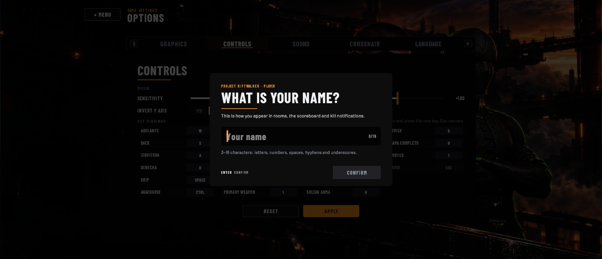
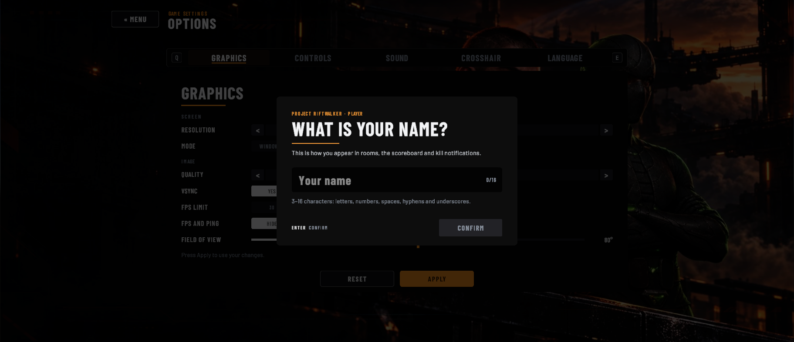
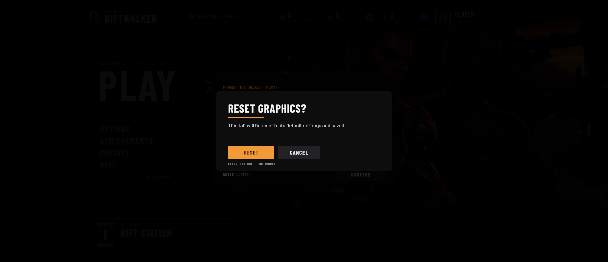
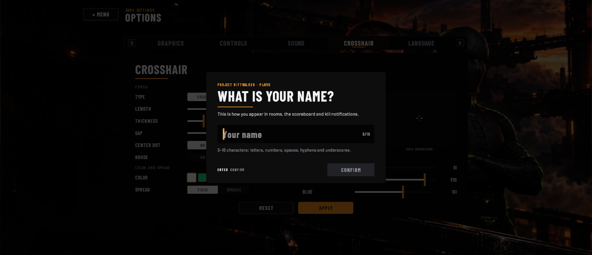
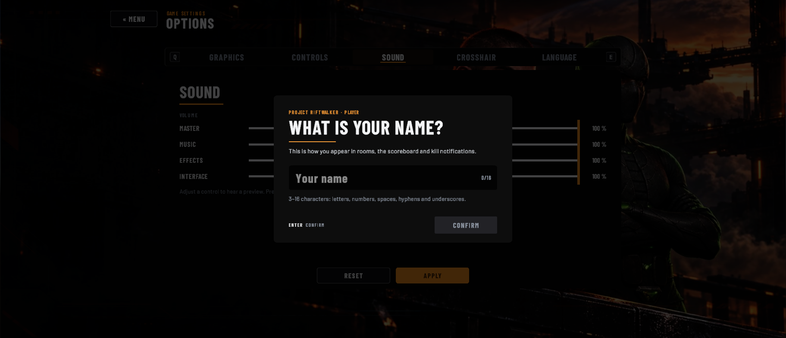
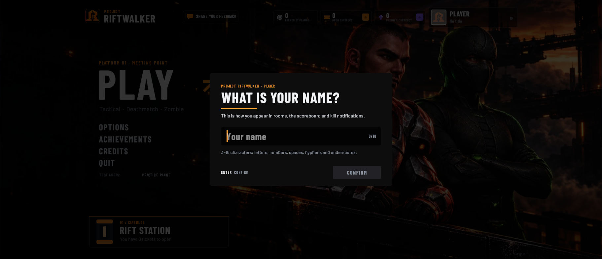

En Opciones hay una pestaña Idioma con Español y English para elegir.
Esperado: Está la pestaña Idioma con las opciones Español y English.
Se prueba a mano: la evidencia se agrega al ejecutarlo.
Corrida del 08/11/2026 con el juego en inglés. Cada caso tiene su captura y la lista de textos que se veían en pantalla, generadas por las pruebas automáticas (IdiomaEnPantallaTests y TraduccionesCompletasTests). Los números de TC son los del plan de pruebas del Sprint 4.
Para volver a generarla: tools/localization/pruebas-idiomas.ps1 con Unity cerrado, o en el Test Runner las categorías US 347, US 348 y US 349. Los carteles reales del mapa de la UNGS quedan en español a propósito.
En Opciones hay una pestaña Idioma con Español y English para elegir.
Esperado: Está la pestaña Idioma con las opciones Español y English.
Se prueba a mano: la evidencia se agrega al ejecutarlo.
Al elegir un idioma, los textos que están en pantalla cambian enseguida, sin reiniciar el juego.
Esperado: Los textos pasan a inglés en el momento, sin reiniciar el juego.
Se prueba a mano: la evidencia se agrega al ejecutarlo.
Al cerrar el juego y volver a abrirlo, sigue en el idioma elegido.
Esperado: El juego abre en inglés.
Se prueba a mano: la evidencia se agrega al ejecutarlo.
Cambiar el idioma no borra ni cambia el perfil, el progreso ni el resto de las opciones.
Esperado: El nombre, el progreso y las demás opciones quedan igual.
Se prueba a mano: la evidencia se agrega al ejecutarlo.
Si el archivo de la preferencia de idioma está dañado, el juego arranca en español.
Esperado: El juego arranca en español, sin errores.
Se prueba a mano: la evidencia se agrega al ejecutarlo.
El launcher tiene un selector de idioma con Español y English.
Esperado: El launcher tiene un selector con Español y English.
Se prueba a mano: la evidencia se agrega al ejecutarlo.
Con English elegido, todos los textos del launcher están en inglés: inicio de sesión, cuenta, actualizaciones y botones.
Esperado: Todos los textos del launcher están en inglés.
Se prueba a mano: la evidencia se agrega al ejecutarlo.
Al jugar desde el launcher, el juego arranca en el idioma elegido en el launcher.
Esperado: El juego arranca en inglés.
Se prueba a mano: la evidencia se agrega al ejecutarlo.
Si se cambia el idioma en Opciones del juego, la próxima vez que se abre el launcher está en ese idioma.
Esperado: El launcher abre en español.
Se prueba a mano: la evidencia se agrega al ejecutarlo.
El menú principal se ve en inglés.
Esperado: Ningún texto del menú principal queda en español.
Textos: US-347_CA1_Menu_principal.txt
Opciones se ve en inglés en todas sus pestañas.
Esperado: Ninguna pestaña de Opciones tiene textos en español.

Opciones Controles
Opciones Graficos
Opciones GuardarOpciones Idioma
Opciones MiraOpciones Restablecer
Opciones Sonido
Opciones VolverTextos: US-347_CA2_Opciones_Controles.txt US-347_CA2_Opciones_Graficos.txt US-347_CA2_Opciones_Guardar.txt US-347_CA2_Opciones_Idioma.txt US-347_CA2_Opciones_Mira.txt US-347_CA2_Opciones_Restablecer.txt US-347_CA2_Opciones_Sonido.txt US-347_CA2_Opciones_Volver.txt
El Perfil se ve en inglés.
Esperado: Ningún texto del Perfil queda en español.
Textos: US-347_CA3_Perfil.txt
Logros se ve en inglés.
Esperado: Ningún texto de Logros queda en español.
Textos: US-347_CA4_Logros.txt
La Estación del Rift y la Tienda se ven en inglés.
Esperado: Ningún texto de la Estación ni de la Tienda queda en español.
La selección de modo se ve en inglés.
Esperado: Ningún texto de la selección de modo queda en español.
Textos: US-347_CA6_Seleccion_de_modo.txt
Los créditos se ven en inglés, salvo los nombres del equipo.
Esperado: Los roles y títulos están en inglés; solo quedan los nombres del equipo.
Textos: US-347_CA7_Creditos.txt
El menú de pausa se ve en inglés.
Esperado: Ningún texto del menú de pausa queda en español.
Textos: US-347_CA8_Pausa.txt
En Invasión, el HUD y el anuncio de la oleada se ven en inglés.
Esperado: El HUD y el anuncio de la oleada están en inglés.
La elección del puesto de suministros se ve en inglés: nombres de las cartas, efectos, rareza y "rinde con".
Esperado: Los nombres, efectos, rarezas y "rinde con" de las cartas están en inglés.
La pantalla de resultado de Invasión se ve en inglés.
Esperado: Títulos, números y botones del resultado están en inglés.
En Deathmatch, el marcador y la tabla se ven en inglés.
Esperado: El marcador y los textos de la partida están en inglés.
Textos: US-348_CA4_Deathmatch.txt
En el modo Táctico, el marcador y la fase de compra se ven en inglés.
Esperado: El marcador y la fase de compra están en inglés.
Textos: US-348_CA5_Tactico.txt
En el campo de práctica, el tutorial y la tienda se ven en inglés.
Esperado: El tutorial y la tienda están en inglés.
Textos: US-348_CA6_Practica_tienda.txt US-348_CA6_Practica_tutorial.txt
Cada texto en español tiene su versión en inglés, y ninguna está vacía.
Esperado: No falta ni sobra ninguna clave y ninguna traducción está vacía.
Los datos que se insertan en un texto (números, nombres, teclas: {0}, {1:00}) son los mismos en los dos idiomas.
Esperado: Todos los textos tienen los mismos datos insertados en los dos idiomas.
Textos: unity-editmode.txt
Si alguien escribe en el código un texto en español que ve el jugador sin pasarlo por el catálogo, la prueba falla y dice en qué archivo está.
Esperado: No aparece ningún texto en español nuevo sin traducir.
Textos: US-349_CA3_Escaner.txt